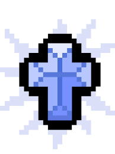
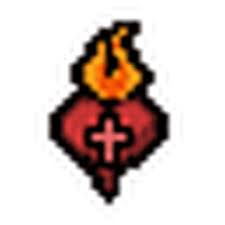
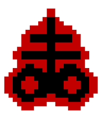
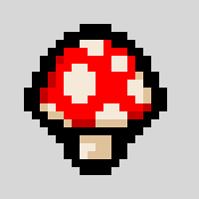

Holy Mantle
Blocks the first instance of damage in every room, making it one of the strongest defensive items in the game. It completely changes how safely Isaac can explore dangerous rooms and bosses.

Sacred Heart
Greatly increases damage while also giving homing tears, increased tear size, and improved accuracy. It is one of the strongest passive items in the game and can turn almost any run into a powerful one with high survivability and damage output.

Brimstone
Replaces tears with a charged blood laser that deals massive damage in a straight line. It completely changes Isaac’s attack style and is one of the most iconic and powerful items in the game, especially when combined with damage upgrades or synergies.

Magic Mushroom
Magic Mushroom provides a massive all-around stat increase, boosting damage, speed, and health while also increasing Isaac’s size. It is one of the strongest items in the game because it immediately improves almost every aspect of a run and can completely turn a weak run into a powerful one.